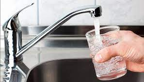

Tap Water
Home

Description
Ever feel super thirsty and cheap? Then this is the recipe for you! Only one ingredient and very simple to make at home or on the go!
WARNING: Taste may vary between sinks used...
Ingredients
Steps
- Place glass under the sink tap.
- Turn the tap on.
- Fill glass with water almost to top. Be advised not to overfill depening on how fast the tap water comes out.
- Turn the tap off.
- In case of spill, use paper towel to clean up any excess.
- Enjoy!